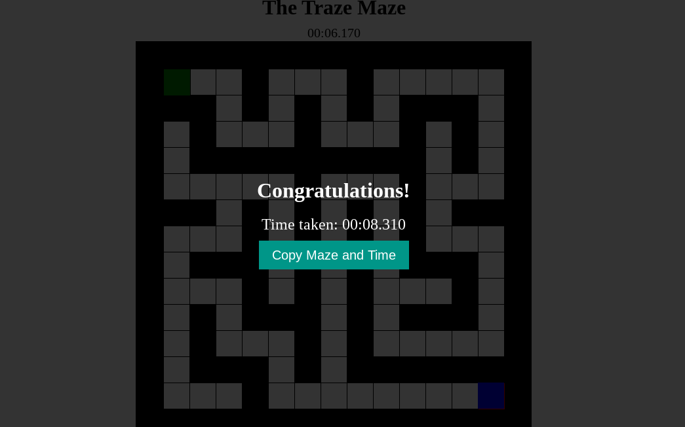
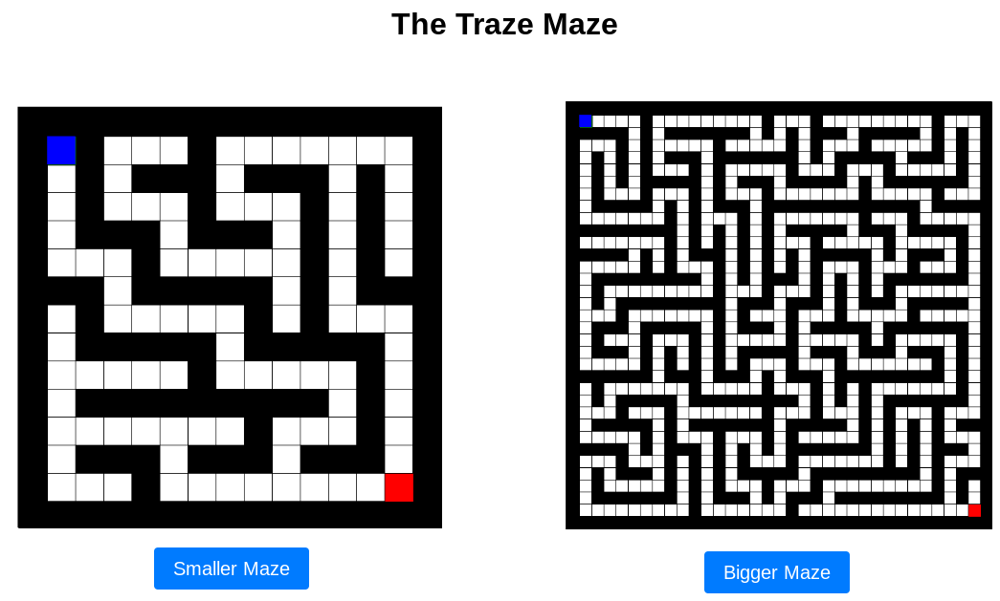
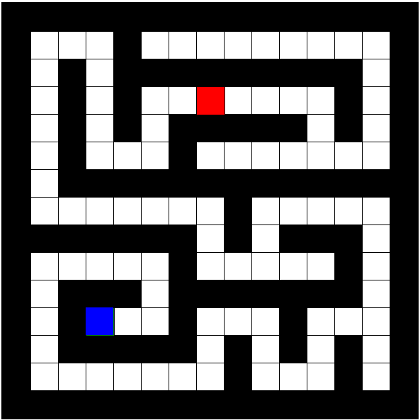
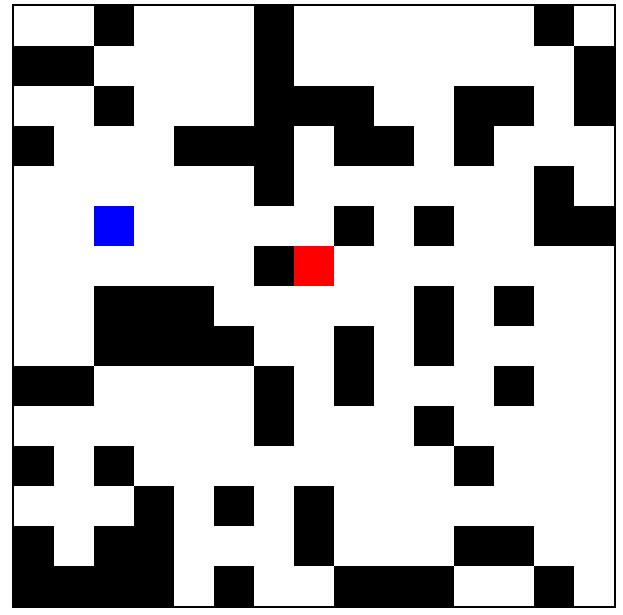
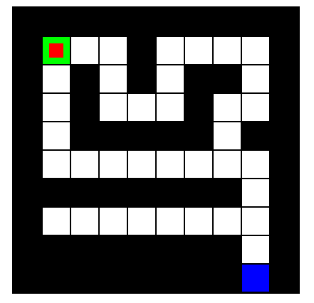

Version 1.1.3: Optimized the websites by removing most of the Javascript and CSS from the mazes and put them into different files.
Version 1.1.2: Added a new hidden mode.
Version 1.1.1: Added a link for email and a feedback form. I also added music as well.
Version 1.1: Added a new size to the maze options (the biggest one) and added an extra mode to play. Changed the title screen to accommodate this change. Also added a personal best mechanic. Also updated the copy maze and time function.
Version 1.0: Refined the about, how to play, and version history pages. Edited the mazes so that the timer starts when you move and you can move with the WASD keys. Made sure that the end screen only pops up when reaching the end goal.
Version 0.9: Added the about, how to play, and version history pages.
Version 0.8: Added menu bar to home screen.
Version 0.7.1: Refined the "Copy Maze and Time" button to have a proper maze copied instead of 1 and 0s.
Version 0.7: Ensured that the player can't move on the end screen, added the "Back" button and the "Restart Maze" button.
Version 0.6: First version of the end screen, it didn't have restart maze buttons or the back button:
Version 0.5: Added a title screen with options for a smaller maze or a bigger maze. Unlike version 1.0, it had no menu bar:
Version 0.4.1: Added a title and a timer to the top of the maze (it used to be called "The Taze Maze" before it was renamed to "The Traze Maze").
Version 0.4: Made an expanded and more challenging version of the maze (it looks like the bigger maze in version 1.0).
Version 0.3.1: Ensured that the start and finish are always in the upper-left corner and lower-right corner, respectively.
Version 0.3: Refined the random maze generator, mazes are more structed and the path from the start and end squares are always unobstructed:
Note: This version took ChatGPT and I the longest to make. About a third of the time put into making the version that would be 1.0 was put into this version.
Version 0.2: Added a random maze generator, mazes would look like:
Version 0.1.1: Added smooth movement (the kind of movement in version 1.0).
Version 0.1: First working version of The Traze Maze. No randomized maze or smooth movement, but this is how it looked like:
Please note that this game is still under development and that these articles are subject to change without warning.
By continuing to browse and play on our website, you agree not to sue, attack, or in any way harm the physical and mental well-being of the creator and maintainer of this website. ©Tim Tran 2023